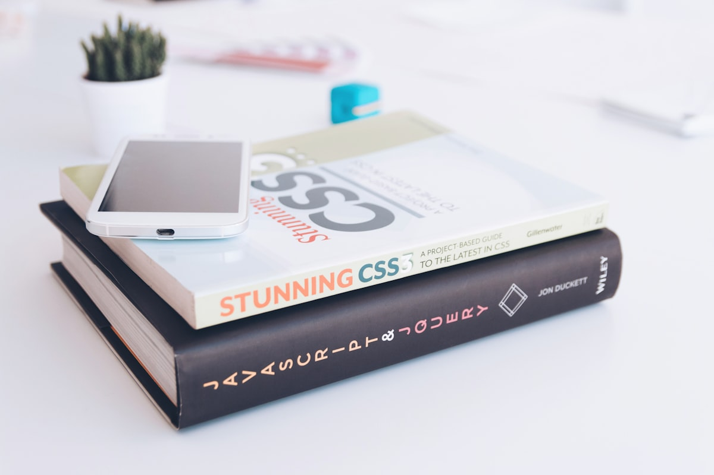

Modern CSS Is Replacing Your JavaScript


For years, we've treated CSS as a pure styling language and JavaScript as the "real" logic layer. If something needed to respond to state, toggle visibility, or calculate positions — we reached for JS. That's outdated. Modern CSS can now handle state, layout intelligence, and UI logic natively. Let's break down 6 features you're probably underusing.
1. :has() — The Parent Selector We Waited a Decade For
The :has()
pseudo-class is arguably the most powerful CSS feature added in years. It allows you to style a
parent element based on the state or existence of its children. Previously, if you wanted to
highlight a card when a user checked a box inside it, you had to attach event listeners and toggle
classes with JavaScript.
Now, it's a single CSS rule. Zero state management needed just to change a border color. Use cases: Form validation UI, interactive cards, accordion states, and navigation highlighting.
// JavaScript required
checkbox.addEventListener('change', () => {
card.classList.toggle('is-selected',
checkbox.checked);
});/* No JavaScript! */
.card:has(input:checked) {
border-color: var(--accent);
background: var(--accent-light);
}The Bigger Point
Modern CSS is incredibly capable. Every bit of state, animation, or structural reflow you can offload from JavaScript to pure CSS means a smaller bundle, better browser optimization, and fewer lifecycle hook bugs to manage in your JS frameworks.
Next time you reflexively start writing JS logic for UI presentation, pause and ask:
"Can CSS already do this?"
Because increasingly, the answer is yes.
Inspiration & Credit
The core topics and examples in this post were directly inspired by an excellent presentation by Leah (@LeahTCodes) at the Laracon EU 2026 event today. Highly recommend checking out her work on bridging the gap between design and logic!